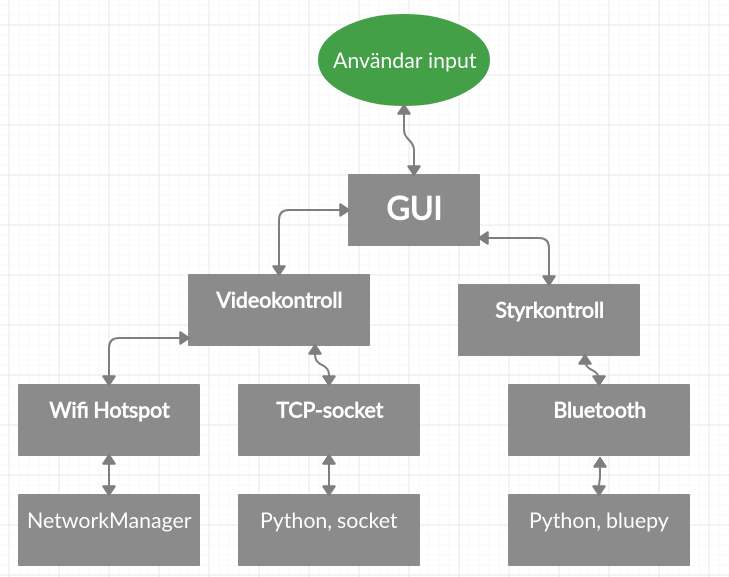

För att kommunicera med Anoroc används BLE (Bluetooth Low Energy) som kommunikationsprotokoll.
För att använda det från datorn används Python, som med hjälp av biblioteket bluepy
kan skapa en socket-lik kommunkation mellan datorn och Bluetooth-modulen.
bluepy är i sin tur byggt på BlueZ, som endast stödjs av Linux.
För att ta emot video från Anoroc skapas en Wifi-hotspot på datorn med hjälp av NetworkManager.
Därefter startar en server som väntar på en TCP-anslutningen till en förbestämd port.
När TCP-förbindelsen är sluten skickas videon via förbindelsen. En fördel med att videon är MJPEG-format är att
varje bild skiljs åt med en bestämd teckenkombination, nämligen hexadecimalt FF D8, som indikerar att en ny bild börjar.
Nedanstående bild visar översiktligt hur kommunikationen går till
